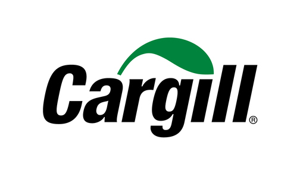
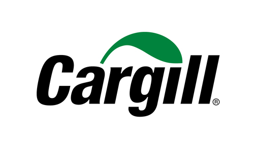
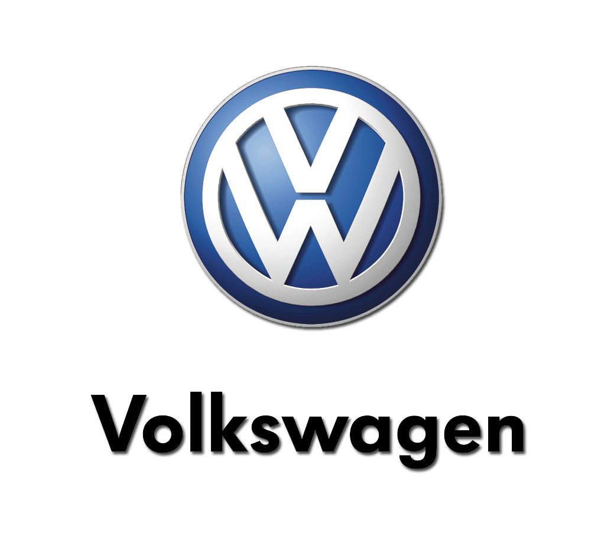
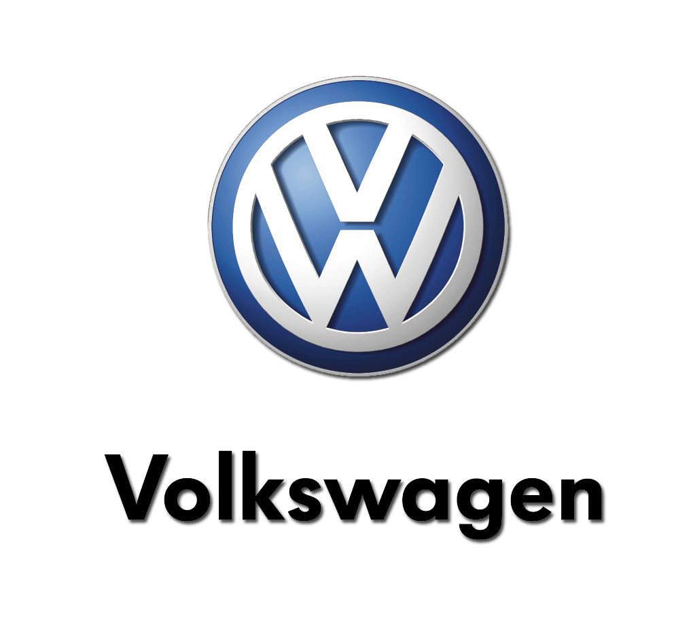

Plaul es una empresa familiar con capital 100% nacional con una amplia experiencia en el rubro metal-mecánico. Sus orígenes se remontan a 65 años atrás, cuando la empresa era fundada por Juan Carlos Rodriguez en su hogar de Lanús Oeste, sobre la calle Plaul. Su trabajo es continuado hoy por los miembros de la tercera generación quienes mantienen su compromiso como el primer día, compartiendo la visión de ser una empresa modelo tanto en producción y comercialización de productos y servicios de calidad e innovadores en el sector metalúrgico industrial, logrando la satisfacción total de nuestros clientes, logrando consolidar la firma en el mercado nacional.
Plaul ha sabido desempeñarse de manera confiable, eficiente, con la más alta calidad de respuesta, dentro del mercado de la industria manufacturera. Actualmente Plaul diseña y fabrica bienes de capital a pedido con ingeniería propia o del cliente, brindando servicio de instalación y puesta en marcha llave en mano.
Nos dedicamos a la fabricación de grandes estructuras, montajes industriales, fabricación de tanques en acero inoxidable y hierro bajo normas API, tanques calefaccionados y de trabajos sometidos a presión. Servicios de pipping, redes instalaciones en general. También contamos con gran experiencia en el diseño y fabricación de todo tipo de transportadores para la industria en general.
El rubro metalmecánico en el que nos venimos desarrollando en estos años, nos ha permitido adquirir un gran potencial también en los montajes industriales, de grandes estructuras.
Brindamos servicios de automación para la industria diseñando e implementando soluciones tecnológicas de última generación que aporten valor agregado y aumenten la eficiencia y rentabilidad. Nuestra misión es brindar soluciones a nuestros clientes, y para ello contamos con el equipamiento necesario y la capacitación constante de nuestro equipo de trabajo para brindar un servicio completo de óptima calidad.
 



 
